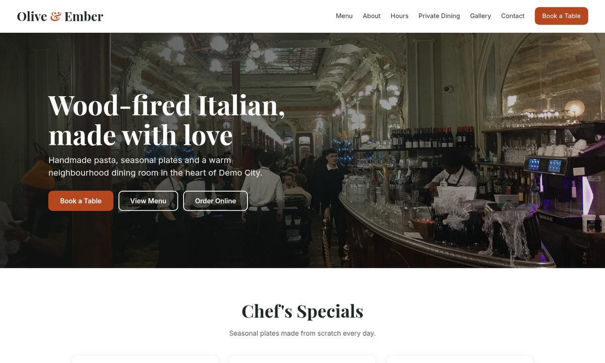

Elementor websites & landing pages
Business websites and conversion-focused landing pages, planned with a wireframe and built section by section. Responsive on desktop, tablet and mobile.
Available for new projects · 30+ hrs/week
WordPress Developer · Elementor, WooCommerce, Site Fixes & Security
I build fast, responsive WordPress websites, set up WooCommerce stores and fix the bugs that break layouts on mobile. Founder of AWL Solutions. Based in Karachi, Pakistan, working with clients worldwide.
Services
Focused on WordPress, from a new page to a broken store. Plus the server side when you need it.
Business websites and conversion-focused landing pages, planned with a wireframe and built section by section. Responsive on desktop, tablet and mobile.
Products, categories, variations (size, colour), sale prices, shop and product page styling, shipping and payment options, with the cart and checkout tested end to end.
Sideways scrolling, overlapping menus, stretched images, broken grids and theme conflicts. Fixed safely in a child theme so updates don't undo the work.
Image compression and WebP, lazy loading, cleaner assets and caching. Every change is measured with Lighthouse before and after.
Malware cleanup, login attempt limits, XML-RPC lockdown, security headers, hidden version info and blocked user enumeration.
Docker and Docker Compose, Nginx, CI/CD with GitHub Actions and infrastructure as code with Terraform on AWS.
Projects
Three self-initiated builds, each made around a fictional business to show my full workflow, from first audit to tested handover. The code for each is on GitHub.
Self-initiated project
Small business website with Elementor
Wireframe-first homepage for a local plumbing company: hero with calls to action, services, trust section and a working contact form, plus basic security hardening.
Fictional business, built to showcase the workflow.
Self-initiated project
WooCommerce clothing store with tested checkout
Eight products with categories, sale prices and size/colour variations, an Elementor homepage, styled shop and product pages, and a test order placed end to end.
Fictional business, built to showcase the workflow.

Self-initiated project
Redesign & bug fixes with measured results
An audit of a broken restaurant site and 8 fixes in a child theme, covering layout, mobile, images, contrast and page weight.
Fictional business, built to showcase the workflow.
Self-initiated project · Fictional business
A local service business needs a site that earns trust quickly and gets visitors to call or request an estimate, on any device.
A clean, responsive homepage with a clear call to action on desktop and mobile, plus a reusable Elementor template.
View code on GitHubSelf-initiated project · Fictional business
A small clothing brand needs a store that is easy to browse, handles sizes and colours properly, and takes orders without errors.
A working store with a verified checkout, responsive on desktop and mobile, with basic security hardening.
View code on GitHubSelf-initiated project · Fictional business
A restaurant site (a theme I built with common real-world bugs on purpose) looked broken on phones and loaded slowly. I audited it like a client site and found 8 issues:
DevOps work
The engineering side: containers, pipelines and cloud infrastructure.
Terraform that provisions an Amazon EKS cluster (Kubernetes 1.30) with its own VPC, private node group and NAT gateway on AWS.
Dockerized Node.js + PostgreSQL REST API with a multi-stage build, Docker Compose and GitHub Actions CI that tests against a real database.
Node.js app behind an Nginx reverse proxy with Docker Compose, health checks, a non-root container and a CI smoke test.
Process
The same five steps on every job, so you always know what's happening and nothing breaks unexpectedly.
I review the site, the goal and what's broken. For fixes, I reproduce the problem first.
A short written plan or wireframe with scope and timeline, agreed before I start.
Clean work in Elementor, WooCommerce or a child theme, on a backup or staging copy where possible.
Desktop, tablet and mobile checks, forms and checkout tested, speed measured with Lighthouse.
Before and after screenshots, notes on what changed and how to manage it yourself.
About
I'm Abdul Wahab, an engineering graduate from NED University in Karachi and the founder of AWL Solutions. I focus on WordPress because it's where most small businesses live online, and where a few careful fixes make a visible difference.
My background in Linux, Docker and cloud infrastructure helps me with the parts of WordPress work that sit below the page builder: hosting issues, security hardening and performance.
A new page, a WooCommerce store, or a layout that breaks on mobile. Send me the details on Upwork and I'll reply with a clear plan.